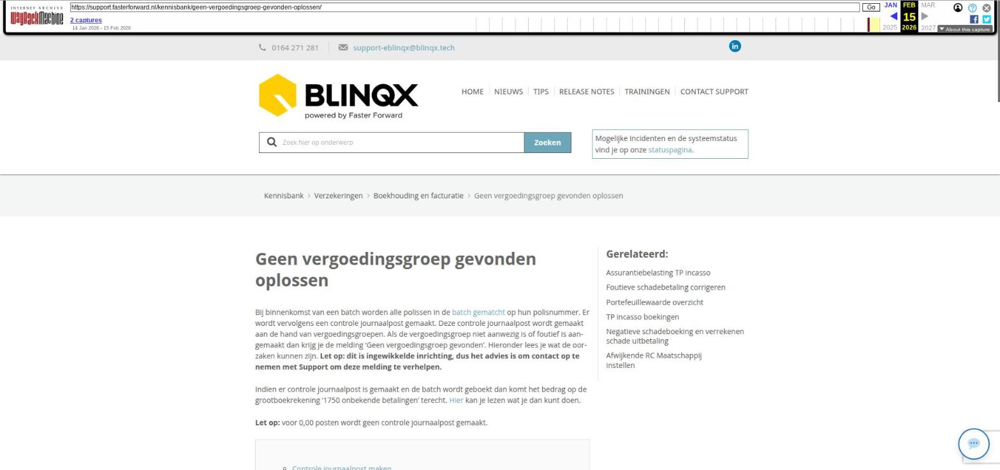

Geen vergoedingsgroep gevonden oplossen

Tekstinhoud
Title: Geen vergoedingsgroep gevonden oplossen | Support
URL: https://web.archive.org/web/20260215230819/https://support.fasterforward.nl/kennisbank/geen-vergoedingsgroep-gevonden-oplossen/
Source element: <article>
---
Geen vergoedingsgroep gevonden oplossen
Bij binnenkomst van een batch worden alle polissen in de batch gematcht op hun polisnummer. Er wordt vervolgens een controle journaalpost gemaakt. Deze controle journaalpost wordt gemaakt aan de hand van vergoedingsgroepen. Als de vergoedingsgroep niet aanwezig is of foutief is aangemaakt dan krijg je de melding 'Geen vergoedingsgroep gevonden'. Hieronder lees je wat de oorzaken kunnen zijn. Let op: dit is ingewikkelde inrichting, dus het advies is om contact op te nemen met Support om deze melding te verhelpen.
Indien er controle journaalpost is gemaakt en de batch wordt geboekt dan komt het bedrag op de grootboekrekening '1750 onbekende betalingen' terecht. Hier kan je lezen wat je dan kunt doen.
Let op: voor 0,00 posten wordt geen controle journaalpost gemaakt.
Controle journaalpost maken
Redenen geen vergoedingsgroep gevonden
Vergoedingengroepen controleren
Vergoedingengroep schadeverzekering
Controle journaalpost maken
Bij de verwerking van de batch worden er controle journaalposten aangemaakt. De regel wordt dan blauw.
Indien het systeem geen vergoedingengroep kan vinden, wordt er dus geen controle journaalpost gemaakt en komt het bedrag bij het wegboeken van de batch op de grootboekrekening 1750 onbekende betalingen terecht. Afhankelijk van de ingestelde settings kan het zo zijn dat je de batch niet kunt afronden, voordat er bij alle posten een controle journaalpost is gemaakt.
Redenen geen vergoedingsgroep gevonden
Indien er geen juiste of meer vergoedingsgroepen gevonden worden dan kan er geen controle journaalpost aangemaakt worden. In de ADN batch komt dan bij de post een uitroepteken te staan ipv een vergrootglas. Er zijn verschillende redenen waarom er geen vergoedingengroep kan worden gevonden bij een polis:
Er zijn geen vergoedingengroepen aanwezig van het type ADN
Incassowijze van de vergoedingengroep komt niet overeen met die van de polis. In de meeste vergoedingsgroepen wordt de incassowijze 'Standaard' niet ondersteund. In de productkaart hoort deze incassowijze dan ook niet meer te staan en dient deze aangepast te worden naar maatschappij of tussenpersoon.
De datum waarop de offerte is aangevraagd, ligt voor de startdatum van de vergoedingengroep.
Het cluster (inkoop via) van de verzekering komt niet overeen met die van de vergoedingengroep
Voor de betreffende verzekering type (schade, inkomen, leven, uitvaart) is geen vergoedingengroep aanwezig
Er zijn dubbele/exact dezelfde vergoedingsgroepen aanwezig. Hierdoor weet eBlinqx niet welke hij moet kiezen
Het betreffende polis product is niet opgenomen in een vergoedingengroep. Dit is enkel van toepassing als er expliciet producten worden uitgesloten anders matcht het systeem altijd.
De betreffende maatschappij is niet opgenomen in een vergoedingengroep
In de kaart is gekozen voor handmatig matchen. Handmatige prolongatie verzekeringen worden niet gematched door ADN aangezien deze simpelweg niet verwacht worden en dus handmatig verwerkt worden.
Vergoedingengroepen controleren
In Productbeheer – tabblad Vergoedingengroep controleer je de vergoedingengroepen. Onder de verschillende tabs (Algemeen, Regelingen, Producten en Organisaties) controleer je de instellingen. Aan de hand van bovenstaande oorzaken kan je de vergoedingsgroepen aan de hand van deze tabbladen controleren.
Vergoedingengroep schadeverzekering
In bovenstaande punten lees je dat de betreffende maatschappij niet is opgenomen in de vergoedingengroep. Wat betreft de vergoedingengroep schadeverzekering is het ook mogelijk om AFD Branches te koppelen. Indien er dan een nieuwe maatschappij bij komt hoef je deze niet toe te voegen bij organisaties, omdat de match wordt gemaakt op de AFD branches.
Het koppelen van de AFD branches doe je onder tabblad AFD Branches. Links staan de beschikbare branches. Hier selecteer je de branches die horen bij een schadeverzekering. Via de pijl in het midden verplaats je deze branches naar Gekoppelde AFD branches. Vervolgens opslaan door middel van het opslaanicoon.
Laatste update: 15 oktober 2025
Was deze informatie nuttig?
Ja Nee